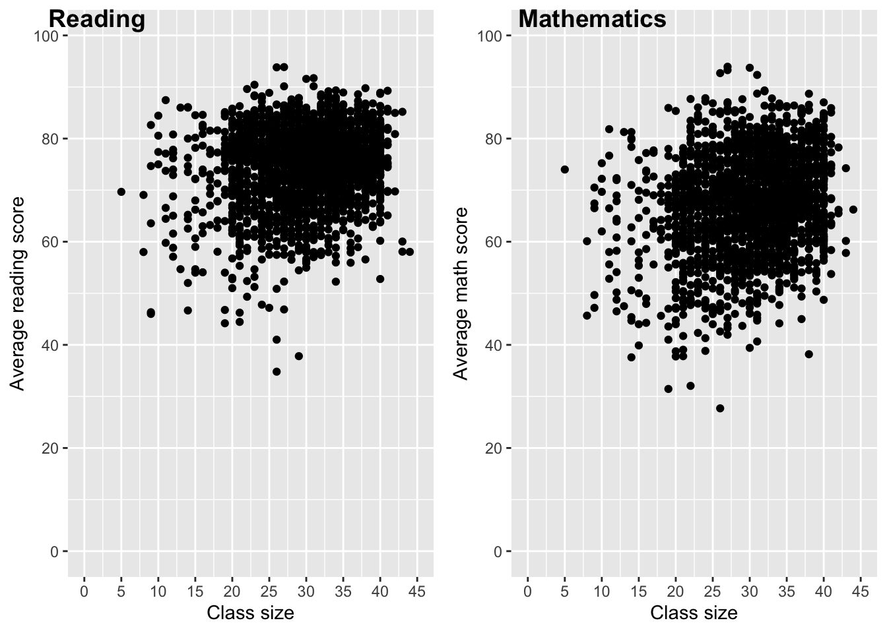
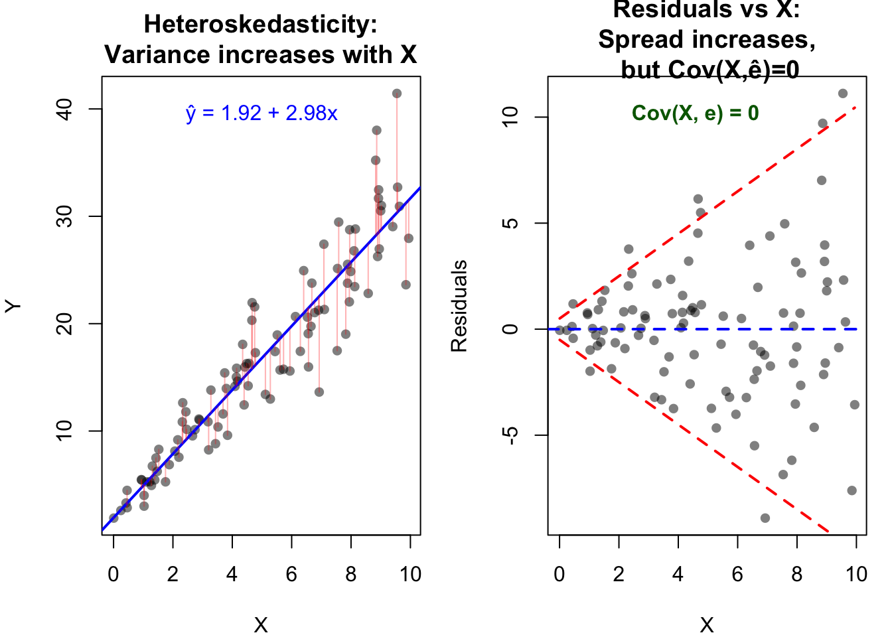
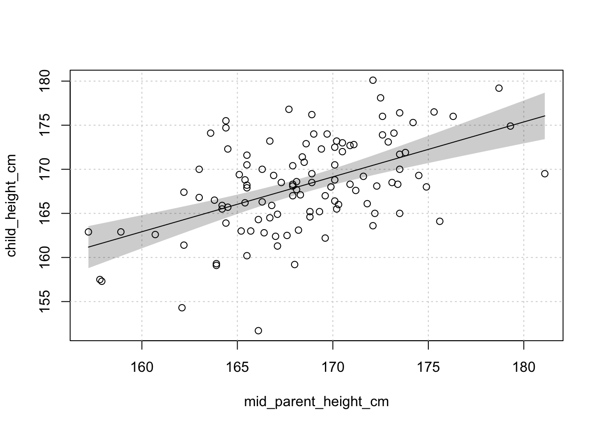

library(haven)
link <- "https://www.dropbox.com/s/wwp2cs9f0dubmhr/grade5.dta?dl=1"
grades <- read_dta(link)Simple Linear Regression - Tasks
1 Task: Getting to know the data
1. Load the data from here as grades. You need to find the function that enables importing .dta files. (FYI: .dta is the extension for data files used in Stata)
2. Describe the dataset:
- What is the unit of observations, i.e. what does each row correspond to?
The unit of observation is the class.
- How many observations are there?
nrow(grades)[1] 2019- What variables do we have? View the dataset to see what the variables correspond to.
names(grades)[1] "schlcode" "school_enrollment" "grade"
[4] "classize" "avgmath" "avgverb"
[7] "disadvantaged" "female" "religious" Note that if you view the data, under each column name you have the variable’s label, which is very convenient.
- What do the variables
avgmathandavgverbcorrespond to?
The avgmath and avgverb variables correspond to the class’ average math and average verb scores.
- Use the
skimfunction from theskimrpackage to obtain common summary statistics for the variablesclassize,avgmathandavgverb. (Hint: usedplyrtoselectthe variables and then simply pipe (%>%)skim().)
library(skimr)
library(tidyverse)── Attaching core tidyverse packages ──────────────────────── tidyverse 2.0.0 ──
✔ dplyr 1.1.4 ✔ readr 2.1.5
✔ forcats 1.0.1 ✔ stringr 1.5.2
✔ ggplot2 4.0.0 ✔ tibble 3.3.0
✔ lubridate 1.9.4 ✔ tidyr 1.3.1
✔ purrr 1.1.0
── Conflicts ────────────────────────────────────────── tidyverse_conflicts() ──
✖ dplyr::filter() masks stats::filter()
✖ dplyr::lag() masks stats::lag()
ℹ Use the conflicted package (<http://conflicted.r-lib.org/>) to force all conflicts to become errorsgrades %>%
select(classize, avgmath, avgverb) %>%
skim()| Name | Piped data |
| Number of rows | 2019 |
| Number of columns | 3 |
| _______________________ | |
| Column type frequency: | |
| numeric | 3 |
| ________________________ | |
| Group variables | None |
Variable type: numeric
| skim_variable | n_missing | complete_rate | mean | sd | p0 | p25 | p50 | p75 | p100 | hist |
|---|---|---|---|---|---|---|---|---|---|---|
| classize | 0 | 1 | 29.93 | 6.56 | 5.00 | 26.00 | 31.00 | 35.00 | 44.00 | ▁▁▆▇▃ |
| avgmath | 0 | 1 | 67.30 | 9.60 | 27.69 | 61.12 | 67.82 | 74.08 | 93.93 | ▁▂▇▇▁ |
| avgverb | 0 | 1 | 74.38 | 7.68 | 34.80 | 69.83 | 75.38 | 79.84 | 93.86 | ▁▁▃▇▂ |
The skim function provides some useful statistics about a variable. There are no missing values for the class size and average scores variables. Class sizes range from 5 students to 44 students, with the average class around 30 students. There are relatively few small classes (25th percentile is 26 students). Also note that average math scores were slightly lower than average verb scores and that the former’s distribution is more dispersed than the latter’s.
3. Do you have any priors about the actual (linear) relationship between class size and student achievement? What would you do to get a first insight?
On the one hand, smaller classes may offer the opportunity for more individualised learning and teachers may more easily monitor low-performing students. On the other hand, if teachers are not trained to properly take advantage of smaller groups then perhaps smaller classes might not be that beneficial. Moreover, depending on the country, smaller classes may be more prevalent in poorer areas, which would yield a positive relationship between class size and student achievement. Conversely, more conscientious parents may choose to locate in areas with smaller class sizes, thinking their children would benefit from them, in which case a negative relationship is likely to be found between class size and student performance.
A scatter plot would provide a first insight into the relationship between class size and student achievement.
library(cowplot)
Attaching package: 'cowplot'The following object is masked from 'package:lubridate':
stampscatter_verb <- grades %>%
ggplot() +
aes(x = classize, y = avgverb) +
geom_point() +
scale_x_continuous(limits = c(0, 45), breaks = seq(0,45,5)) +
scale_y_continuous(limits = c(0, 100), breaks = seq(0, 100, 20)) +
labs(x = "Class size",
y = "Average reading score")
scatter_math <- grades %>%
ggplot() +
aes(x = classize, y = avgmath) +
geom_point() +
scale_x_continuous(limits = c(0, 45), breaks = seq(0,45,5)) +
scale_y_continuous(limits = c(0, 100), breaks = seq(0, 100, 20)) +
labs(x = "Class size",
y = "Average math score")
plot_grid(scatter_verb, scatter_math, labels = c("Reading", "Mathematics"))
4. Compute the correlation between class size and math and verbal scores. Is the relationship positive/negative, strong/weak?
grades %>%
summarise(cor_verb = cor(classize, avgverb),
cor_math = cor(classize, avgmath))# A tibble: 1 × 2
cor_verb cor_math
<dbl> <dbl>
1 0.190 0.217Both correlations are positive, consistent with the positive association suggested by the previous scatter plots. However, they are quite weak, around 0.2, suggesting the relationship isn’t very strong. Recall that a correlation of 1 implies a perfect positive linear relationship, i.e. all points are on the same line, while a correlation of -1 implies a perfect negative linear relationship. A correlation of 0 implies no linear association whatsoever.
2 Task: OLS Regression
Run the following code to aggregate the data at the class size level:
grades_avg_cs <- grades %>%
group_by(classize) %>%
summarise(avgmath_cs = mean(avgmath),
avgverb_cs = mean(avgverb))1. Compute the OLS coefficients \(b_0\) and \(b_1\) of the previous regression using the formulas on slide 25. (Hint: you need to use the cov, var, and mean functions.)
cov_x_y = grades_avg_cs %>%
summarise(cov(classize, avgmath_cs))
var_x = var(grades_avg_cs$classize)
b_1 = cov_x_y / var_x
b_1 cov(classize, avgmath_cs)
1 0.191271y_bar = mean(grades_avg_cs$avgmath_cs)
x_bar = mean(grades_avg_cs$classize)
b_0 = y_bar - b_1 * x_bar
b_0 cov(classize, avgmath_cs)
1 61.10917Let’s check that this is indeed identical to what the lm function would return:
lm(avgmath_cs ~ classize, data = grades_avg_cs)
Call:
lm(formula = avgmath_cs ~ classize, data = grades_avg_cs)
Coefficients:
(Intercept) classize
61.1092 0.1913 🎉 looking good!
2. Regress average verbal score (dependent variable) on class size (independant variable). Interpret the coefficients.
lm(avgverb_cs ~ classize, grades_avg_cs)
Call:
lm(formula = avgverb_cs ~ classize, data = grades_avg_cs)
Coefficients:
(Intercept) classize
69.1861 0.1332 Interpretation for \(b_0\): The predicted verbal score when class size has no students is 69.19. Note that this makes little sense because if a class has no students then there cannot be any scores! You should be warry of out-of-sample predictions, i.e. predictions for values that are outside the range of values in the data sample.
Interpretation for \(b_1\): On average, a class size increase of one student is associated with a 0.13 increase in average verbal score.
3. Is the slope coefficient similar to the one found for average math score? Was it expected based on the graphical evidence?
The slope coefficient, \(b_1\), is very similar to the one found for average math sore. This was expected considering the scatter plots were pretty close for both scores.
4. What is the predicted average verbal score when class size is equal to 0? (Does that even make sense?!)
As noted above, the predicted average verbal score when class size is equal to 0 is 69.19, and that makes no sense!
5. What is the predicted average verbal score when the class size is equal to 30 students?
The predicted average verbal score when the class size is equal to 30 students is: 69.19 + 0.13 x 30 = 73.09.
3 Task: \(R^2\) and goodness of fit
1. Regress avgmath_cs on classize. Assign to an object math_reg.
math_reg <- lm(avgmath_cs ~ classize, grades_avg_cs)2. Pass math_reg in the summary() function. What is the (multiple) \(R^2\) for this regression? How can you interpret it?
summary(math_reg)
Call:
lm(formula = avgmath_cs ~ classize, data = grades_avg_cs)
Residuals:
Min 1Q Median 3Q Max
-9.7543 -1.7985 0.3109 1.4768 11.9345
Coefficients:
Estimate Std. Error t value Pr(>|t|)
(Intercept) 61.10917 1.43598 42.556 < 2e-16 ***
classize 0.19127 0.05175 3.696 0.000725 ***
---
Signif. codes: 0 '***' 0.001 '**' 0.01 '*' 0.05 '.' 0.1 ' ' 1
Residual standard error: 3.528 on 36 degrees of freedom
Multiple R-squared: 0.2751, Adjusted R-squared: 0.2549
F-statistic: 13.66 on 1 and 36 DF, p-value: 0.0007249The \(R^2\) is equal to approx. 0.28, which implies that around 28% of the variation in average math score is explained by class size.
3. Compute the squared correlation between classize and avgmath_cs. What does this tell you about the relationship between \(R^2\) and the correlation in a regression with only one regressor?
grades_avg_cs %>%
summarise(cor_sq = cor(classize, avgmath_cs)^2)# A tibble: 1 × 1
cor_sq
<dbl>
1 0.275In a regression with only one regressor the \(R^2\) is equal to the square of the correlation between the dependent and independent variables.
4. Install and load the broom package. Pass math_reg in the augment() function and assign it to a new object. Use the variance in avgmath_cs (SST) and the variance in .fitted (predicted values; SSE) to find the \(R^2\) using the formula on the previous slide.
library(broom)
math_reg_aug <- augment(math_reg)
SST = var(grades_avg_cs$avgmath_cs)
SSE = var(math_reg_aug$.fitted)
SSE/SST[1] 0.2750555. Repeat steps 1 and 2 for avgverb_cs. For which exam does the variance in class size explain more of the variance in students’ scores?
verb_reg <- lm(avgverb_cs ~ classize, grades_avg_cs)
summary(verb_reg)
Call:
lm(formula = avgverb_cs ~ classize, data = grades_avg_cs)
Residuals:
Min 1Q Median 3Q Max
-17.0152 -0.2451 0.8818 1.8443 8.8323
Coefficients:
Estimate Std. Error t value Pr(>|t|)
(Intercept) 69.18610 1.69180 40.895 <2e-16 ***
classize 0.13316 0.06097 2.184 0.0356 *
---
Signif. codes: 0 '***' 0.001 '**' 0.01 '*' 0.05 '.' 0.1 ' ' 1
Residual standard error: 4.157 on 36 degrees of freedom
Multiple R-squared: 0.117, Adjusted R-squared: 0.09246
F-statistic: 4.77 on 1 and 36 DF, p-value: 0.03557The \(R^2\) is greater for maths than for reading, therefore class size explains more of the variation in math scores than in reading scores.
4 Task : Why is \(\text{Cov}(X, e) = 0\) alayws true in model estimated via OLS?
Consider the true population model
\[y = \alpha + \beta x + \varepsilon\]
We assume on this model that
\[E[\varepsilon | x] = 0\]
and we say that \(x\) is exogenous to the model (i.e. determined outside of it - nothing to do with whatever is in \(\varepsilon\)).
Now suppose we want estimate those true parameters \(\alpha,\beta\) via OLS, using this statistical model:
\[y = a + bx + e\]
\(a,b\) are our estimates of \(\alpha,\beta\).
Question: Why is \(\text{Cov}(x, e) = 0\) in the OLS statistical model?
Can’t we have systematically larger \(x\) associated with larger \(e\)? Wouldn’t \(\text{Cov}(X, e) > 0\) just imply that for larger \(x\), our prediction would incur a larger error? You may have that intuition:
I can draw a scatter plot where larger \(x\) are associated with larger deviations of \(y_i\) from \(\hat{y}_i\), no?
Yes, you can certainly do that. There is a name for this, actually, it’s called heteroskedasticity. Look at the left panel: the larger \(X\), the larger the deviations around the line. But then, look at the right panel, too. Can you see that the residuals are not systematically either above or below their mean (i.e. zero), as \(X\) increases? That’s the point I’m trying to make here.

=== Heteroskedasticity Example ===
True coefficients: alpha = 2, beta = 3
OLS estimates: a = 1.924, b = 2.976
Cov(X, residuals) = 0.00000000 ≈ 0
This is VERY close to zero, as required by OLS!
Note: Errors get larger as X increases (heteroskedasticity),
but they're still uncorrelated with X (Cov = 0).What would happens if Cov(X, e) ≠ 0?
When \(\text{Cov}(X, e) \neq 0\), your OLS estimate \(b\) will be biased. The estimated coefficient will systematically differ from the true causal effect of \(X\) on \(Y\).
Why? If \(e\) is correlated with \(X\), when you estimate \(\beta\) using OLS, you can’t tell whether changes in \(Y\) are due to:
- The true effect of \(X\) (what \(\beta\) captures), or
- The fact that \(e\) happens to be larger when \(X\) is larger
Your estimate \(b\) will pick up both effects, making it biased. It’s easy to see, if you remember that OLS recovers the expected value of \(y\) given \(x\):
\[E[y | x] = E[ a + b x + e | x] = a + b x + E[e | x]\] if the last bit is not zero, then, as you vary \(x\), you cannot say that all else being equal, moving \(x\) by 1 unit changes \(E[y | x]\) by \(b\) units: because also \(E[e | x]\) will move! Ok, and of course we already know (right?!) that
\[E[e | x] \Rightarrow Cov(x,e) = 0\].
4.1 \(Cov(X, e) = 0\) by construction in OLS
Here’s something crucial: once you fit OLS and compute residuals \(e_i\), they are always uncorrelated with \(X\) by construction.
This is not an assumption but a consequence of how OLS works. Let’s see why. To see this clearly, we need to write out the OLS estimator in algebra. You don’t need to study this if you don’t want to, the picture above should give you all the insights you need. But if not, follow along!
4.2 Deriving the OLS estimators
We want to minimize the sum of squared residuals: \[\min_{a, b} \sum_{i=1}^{n} (y_i - a - bx_i)^2\]
First Order Conditions
Taking derivatives and setting them to zero:
With respect to \(a\): \[\frac{\partial}{\partial a} \sum (y_i - a - bx_i)^2 = -2\sum (y_i - a - bx_i) = 0\]
With respect to \(b\): \[\frac{\partial}{\partial b} \sum (y_i - a - bx_i)^2 = -2\sum x_i(y_i - a - bx_i) = 0\]
FOC 1: \[\sum (y_i - a - b x_i) = 0\]
FOC 2: \[\sum x_i(y_i - a - b x_i) = 0\]
4.3 Why Residuals Are Uncorrelated with X
Notice that \((y_i - a - b x_i) = e_i\) is the residual. So FOC 2 says: \[\sum x_i e_i = 0\]
This is exactly the statement that \(X\) and the residuals are uncorrelated (in sample)!
From FOC 1, we also have \(\sum e_i = 0\), which means \(\bar{e} = 0\).
Therefore: \[\text{Cov}(X, e) = \frac{1}{n}\sum (x_i - \bar{x})(e_i - \bar{e}) = \frac{1}{n}\sum x_i e_i - \bar{x}\bar{e} = 0\]
Key insight: OLS mechanically forces the residuals to be uncorrelated with \(X\). This isn’t an assumption—it’s baked into the optimization.
4.3.1 Solving for the Estimates
Step 1: Solve for \(a\) from FOC 1
From \(\sum (y_i - a - bx_i) = 0\): \[\sum y_i - na - b\sum x_i = 0\] \[na = \sum y_i - b\sum x_i\] \[a = \bar{y} - b\bar{x}\]
Step 2: Substitute into FOC 2
Plug \(a = \bar{y} - b\bar{x}\) into FOC 2: \[\sum x_i(y_i - (\bar{y} - b\bar{x}) - bx_i) = 0\] \[\sum x_i(y_i - \bar{y} + b\bar{x} - bx_i) = 0\] \[\sum x_i(y_i - \bar{y}) + b\bar{x}\sum x_i - b\sum x_i^2 = 0\]
Step 3: Simplify using \(\sum x_i = n\bar{x}\)
Since \(\bar{x} = \frac{1}{n}\sum x_i\), we have \(\sum x_i = n\bar{x}\).
Therefore: \[\sum x_i(y_i - \bar{y}) = b\sum x_i^2 - b\bar{x}(n\bar{x})\] \[\sum x_i(y_i - \bar{y}) = b(\sum x_i^2 - n\bar{x}^2)\]
Solving for \(b\): \[b = \frac{\sum x_i(y_i - \bar{y})}{\sum x_i^2 - n\bar{x}^2}\]
Step 4: Rewrite in covariance form
Numerator: We can show that \(\sum x_i(y_i - \bar{y}) = \sum (x_i - \bar{x})(y_i - \bar{y})\) because: \[\sum (x_i - \bar{x})(y_i - \bar{y}) = \sum x_i(y_i - \bar{y}) - \bar{x}\sum(y_i - \bar{y})\]
and \(\sum(y_i - \bar{y}) = 0\) (deviations from the mean sum to zero).
Denominator: Similarly, \(\sum x_i^2 - n\bar{x}^2 = \sum(x_i - \bar{x})^2\) because: \[\sum(x_i - \bar{x})^2 = \sum(x_i^2 - 2x_i\bar{x} + \bar{x}^2) = \sum x_i^2 - 2\bar{x}\sum x_i + n\bar{x}^2\] \[= \sum x_i^2 - 2\bar{x}(n\bar{x}) + n\bar{x}^2 = \sum x_i^2 - n\bar{x}^2\]
Therefore, the OLS estimates are:
\[\boxed{b = \frac{\sum (x_i - \bar{x})(y_i - \bar{y})}{\sum(x_i - \bar{x})^2} = \frac{\text{Cov}(X,Y)}{\text{Var}(X)}}\]
\[\boxed{a = \bar{y} - b\bar{x}}\]
4.4 Summary
The assumption \(\text{Cov}(X, \varepsilon) = 0\) is about the true errors \(\varepsilon\) in the population, not the residuals \(e\) we observe when computing the OLS estimates.
The result that OLS residuals \(e\) are always uncorrelated with \(X\) is a mechanical consequence of how we compute the estimators. You can see how it falls out of the first order conditions used above.
When \(\text{Cov}(X, \varepsilon) \neq 0\) in reality (e.g., due to omitted variables), OLS gives you biased estimates even though the residuals appear well-behaved.
Don’t confuse correlation with heteroskedasticity: larger errors for larger \(X\) (in magnitude) is about variance, not bias (see picture above!)
5 Task: Mean Reversion
Sir Francis Galton examined the relationship between the height of children and their parents towards the end of the 19th century. You decide to update his findings by collecting data from 110 ESOMAS students. Your data is here
- Load the data and make a scatter plot of
child_height_cmvsmid_parent_height_cm. Ideally add a regression line to your plot. - estimate the model \[\text{child\_height\_cm} = \beta_0 + \beta_1 \text{mid\_parent\_height\_cm} + u\] and save it as object
m. - What is the meaning of the cofficients and the R2 measure?
- What is the prediction for the height of a child whose parents have an average height of 180cms? What if they have 160 cm?
- type
summary(m)to get the model summary and tell us what the Residual Standard Error in this regression is. What is its interpretation? - Show that in a single linear regression model, the formula for the slope estimate \(b_1\) can be written as \[b_1 = r \frac{s_y}{s_x}\] where \(r\) is \(corr(x,y)\), and \(s_k\) is the standard deviation of variable \(k\). Compute the slope coefficient in this way.
- Given the positive intercept and the fact that the slope lies between zero and one, what can you say about the height of students who have quite tall parents? Those who have quite short parents?
- Galton was concerned about the height of the English aristocracy and referred to the above result as “regression towards mediocrity.” Can you figure out what his concern was? Why do you think that we refer to this result today as “Galton’s Fallacy”?
5.0.1 Answers
d = read.csv("https://www.dropbox.com/scl/fi/yrv6m41sgpa46997uj4om/galton_students_110.csv?rlkey=udp2uy6mdicdul7n5jn0bgbzq&dl=1")
library(tinyplot)
plt(child_height_cm ~ mid_parent_height_cm, data = d, grid = TRUE)
plt_add(type = "lm")
m = lm(child_height_cm ~ mid_parent_height_cm, d)
summary(m)
Call:
lm(formula = child_height_cm ~ mid_parent_height_cm, data = d)
Residuals:
Min 1Q Median 3Q Max
-15.0161 -3.1070 0.0104 3.1312 9.8421
Coefficients:
Estimate Std. Error t value Pr(>|t|)
(Intercept) 63.32286 16.77887 3.774 0.000263 ***
mid_parent_height_cm 0.62248 0.09956 6.252 8.26e-09 ***
---
Signif. codes: 0 '***' 0.001 '**' 0.01 '*' 0.05 '.' 0.1 ' ' 1
Residual standard error: 4.547 on 108 degrees of freedom
Multiple R-squared: 0.2658, Adjusted R-squared: 0.259
F-statistic: 39.09 on 1 and 108 DF, p-value: 8.259e-09- intercept: with parents of 0 cm height, children expect on average to be 63 cm tall. No sensible interpretation.
- slope: the average parental height increasing by 1 cm implies the child’s height to increase on average by 0.62 cm. The R2 means that this model explains 26% of the variation in the data.
- Prediction: you can of course do this by hand (in the exam you will have to do it by hand!)
predictions = data.frame(mid_parent_height_cm = c(160,180))
predictions$pred_child_height = predict(m, newdata = predictions)- We see a SER of about 4.5. This means that the estimated standard deviation of regression residuals \(e\) is equal to 4.5. This is measured in the units of the outcome variable, i.e. cm. It means that the average spread of data around the regression line is 4.5 cm. This measure is defined as \[\sqrt{\frac{SSR}{n-2}}\]. We can verify this by computing by hand:
sqrt(
sum(m$residuals^2) / (nrow(d) - 2)
)[1] 4.546831- We can express the slope cofficient as usual as the ratio of variance over variance of \(x\). We just need to realize that the correlation is
\[r = \frac{cov(x,y)}{s_x s_y}\]
from there we just substitute:
\[\begin{align} b1 &= \frac{cov(x,y)}{var(x)} \\ &= \frac{cov(x,y)}{s_x s_x} \\ &= \frac{cov(x,y)}{s_x s_x} \\ &= r \frac{s_y}{s_x} \end{align}\]
sx = sd(d$mid_parent_height_cm)
sy = sd(d$child_height_cm)
cor(d$mid_parent_height_cm,d$child_height_cm) * sy / sx[1] 0.6224759- Those who have relatively small parents are on average taller than them, and vice versa for the ones with tall parents.
- Galton feared that human population would “regress” to some intermediate height: all tall people would have less tall offspring, so human size shrinks. Clearly, we know this is not the case - if anything, average human height has steadily increased over time. The fallacy of Galton was to take the regression result at face value, instead of thinking about the underlying process that generates the data. Parental and Child height are two imperfectly correlated random variables, and there is no perfect inheritance of the “tallness” trait. Many other factors (in \(u\)) impact the height of a person.
6 Task: No Intercept
What is a regression without any intercept? In other words, \(b_0 = 0\). To generate some intuition, let’s get one of R’s built-in datasets and have a look. The cars dataset has 2 varialbes, speed and dist of 1920’s cars. dist is “stopping distance”, i.e. basically how far did you travel after you hit the breaks.
library(tinyplot) # my new favourite plotting package
plt(speed ~ dist, cars,ylim = c(0,30)) # mtcars is always available, nothing to load
plt_add(type = "lm")
m0 = lm(speed ~ dist, cars)
coef(m0)(Intercept) dist
8.2839056 0.1655676 How does this look if we force \(b_0 = 0\)?
Well, we just compute the slope estimator without the \(b_0\):
\[\min_{b_1} \sum_{i=1}^N (y_i - b_1 x_i)^2\]
Take the foc wrt b:
\[-2 \sum_{i=1}^N (y_i - b_1 x_i) x_i = 0\]
which leads to
\[b_1 = \frac{\sum_{i=1}^N y_i x_i}{\sum_{i=1}^N x_i^2}\]
You can see that this looks different from our usual formula - if our variables are not centered wrt to their mean. Anway, let’s see what it looks like! We know one thing: by courtesy of \(b_0 = 0\), this line must pass through the origin of our plot!
b0 = 0 # by assumption
(b1 = sum(cars$speed * cars$dist) / sum((cars$dist)^2)) # the bracket makes it display[1] 0.3080951Ready?
plt(speed ~ dist, cars, ylim = c(0,30)) # cars is always available, nothing to load
plt_add(type = "lm")
plt_add(type = type_abline(a = b0, b = b1), col = "red")
# the -1 in the formula means "no intercept"
lm(speed ~ -1 + dist, cars)
Call:
lm(formula = speed ~ -1 + dist, data = cars)
Coefficients:
dist
0.3081 check that is the same as b1 from above.
6.1 Mean of Residuals?
Notice another important fact here. Given that we only have a single margin of adjustment in this case (i.e. only the slope), via this condition
\[-2 \sum_{i=1}^N (y_i - b_1 x_i) x_i = 0,\]
with respect to the case with intercept, we are missing this one (which was the FOC wrt to the intercept parameter \(a\)):
\[\sum (y_i - a - b x_i) = \sum e_i = 0\] That is, without this condition (where can shift the line up and down by the amount \(a\)), there is no guarantee that the mean (and sum) of residuals is zero! You should quickly reconsider what that means for our deliberations about correlation between \(x\) and \(e\) in the standard case above in Section 4.3. We saw above that this is always zero if there is an intercept - not so without! That’s the main reason why we include an intercept. quick numerical check:
# standard model WITH intercept
m1 = lm(dist ~ speed, cars)
# model withOUT intercept (but same variables!)
m2 = lm(dist ~ -1 + speed, cars)compare the average of residuals in each case. Standard model:
mean(summary(m1)$residuals)[1] -4.440892e-16Model without intercept (but same variables):
mean(summary(m2)$residuals)[1] -1.8206357 Task: Centered Regression
By centering or demeaning a regression, we mean to substract from both \(y\) and \(x\) their respective averages to obtain \(\tilde{y}_i = y_i - \bar{y}\) and \(\tilde{x}_i = x_i - \bar{x}\).
We then run a regression without intercept as above. That is, we use \(\tilde{x}_i,\tilde{y}_i\) instead of \(x_i,y_i\) to obtain our slope estimate \(b_1\). The formula is identical to the one used above, i.e. for the case where we don’t have an intercept:
\[\begin{align} b_1 &= \frac{\frac{1}{N}\sum_{i=1}^N \tilde{x}_i \tilde{y}_i}{\frac{1}{N}\sum_{i=1}^N \tilde{x}_i^2}\\ &= \frac{\frac{1}{N}\sum_{i=1}^N (x_i - \bar{x}) (y_i - \bar{y})}{\frac{1}{N}\sum_{i=1}^N (x_i - \bar{x})^2} \\ &= \frac{cov(x,y)}{var(x)} \end{align}\]
This last expression is identical to our usual one! It’s the standard OLS estimate for the slope coefficient. We note the following:
Adding a constant to a regression produces the same result as centering all variables and estimating without intercept. So, unless all variables are centered, always include an intercept in the regression.
Plot.
cars$speed_centered = cars$speed - mean(cars$speed)
cars$dist_centered = cars$dist - mean(cars$dist)
plt(speed_centered ~ dist_centered, cars)
plt_add(type = "lm")
plt_add(type = type_hline(h = 0), col = "red")
plt_add(type = type_vline(v = 0), col = "red")
Notice: The width of support of data is the same. By that I mean the length of the interval where all data is contained: centered x lies in [-40.98,77.02] and not centered x lies in [2,120]. The length of the first interval is 118, the second one is also 118. We just shifted the location of each data point by the mean (towards the left for x, and down for y). That’s why the slope coefficient is unchanged.
lm(speed_centered ~ -1 + dist_centered, cars)
Call:
lm(formula = speed_centered ~ -1 + dist_centered, data = cars)
Coefficients:
dist_centered
0.1656
To get a better feel for what is going on here, you can try this out now by yourself by typing:
EconometricsApps::launchApp("demeaned_reg")8 Task: Standardized Regression
We now know that we can write the slope estimator also as \[b_1 = r \frac{s_y}{s_x}.\]
Show that if we standardize both x and y, then we have that \(b_1\) is exactly equal to \(r\)!
8.1 Answer
We can use the same formula from above because we run this without intercept again:
\[b_1 = \frac{\sum_{i=1}^N y_i x_i}{\sum_{i=1}^N x_i^2}\]
and now we just replace the y and x variables:
We define transformed variables \(\breve{y}_i = \frac{y_i-\bar{y}}{\sigma_y}\) and \(\breve{x}_i = \frac{x_i-\bar{x}}{\sigma_x}\) where \(\sigma_z\) is the standard deviation of variable \(z\). From here on, you should by now be used to what comes next! As above, we use \(\breve{x}_i,\breve{y}_i\) instead of \(x_i,y_i\) in the formula for the slope estimator:
\[\begin{align} b_1 &= \frac{\frac{1}{N}\sum_{i=1}^N \breve{x}_i \breve{y}_i}{\frac{1}{N}\sum_{i=1}^N \breve{x}_i^2}\\ &= \frac{\frac{1}{N}\sum_{i=1}^N \frac{x_i - \bar{x}}{\sigma_x} \frac{y_i - \bar{y}}{\sigma_y}}{\frac{1}{N}\sum_{i=1}^N \left(\frac{x_i - \bar{x}}{\sigma_x}\right)^2} \\ &= \frac{Cov(x,y)}{\sigma_x \sigma_y} \\ &= Corr(x,y) = r \end{align}\]
So, if our variables have been standardized before running the regression, there is no adjustment of \(\frac{s_y}{s_x}\) to make as above.
Plot!!
cars$speed_std = (cars$speed - mean(cars$speed)) / sd(cars$speed)
cars$dist_std = (cars$dist - mean(cars$dist)) / sd(cars$dist)
plt(speed_std ~ dist_std, cars)
plt_add(type = "lm")
plt_add(type = type_hline(h = 0), col = "red")
plt_add(type = type_vline(v = 0), col = "red")
Notice: The range of data is no longer the same: standardized [-1.59,2.99] and not [2,120] . We rescaled the variables by a a number (that’s what the division did). That’s why our slope estimate is not the same anymore.
lm(speed_std ~ -1 + dist_std, cars)
Call:
lm(formula = speed_std ~ -1 + dist_std, data = cars)
Coefficients:
dist_std
0.8069 Finally:
with(cars, cor(speed, dist))[1] 0.8068949Notice: in real applications it is more common to standardize only the x variable. As we will see in the lectures later, this leads to an interpretation of the estimate as a 1 std. deviation increase in \(x\) is associated with a \(b_1\) units increase in outcome \(y\)
EconometricsApps::launchApp("reg_standardized")